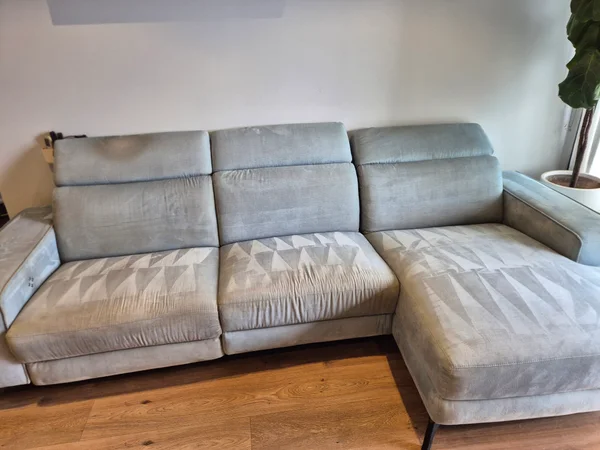
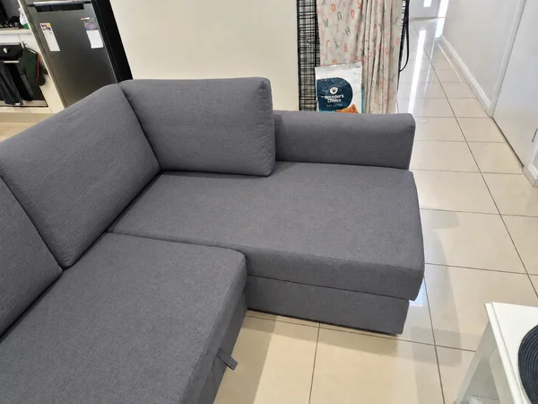

Clear prices
Most indoor services can be booked online with upfront rates based on furniture, room or mattress size.
Residential cleaning in Adelaide
MisterClean restores sofas, carpets, rugs, mattresses and outdoor surfaces with targeted treatments, steam cleaning and powerful extraction.
Why MisterClean
Most indoor services can be booked online with upfront rates based on furniture, room or mattress size.
Steam cleaning and injector-extractor methods help remove embedded dirt, allergens, bacteria and odours.
Fabric, leather, velvet, wool, synthetic fibres and delicate blends are treated with suitable products.
A local, hands-on service
MisterClean is built around careful, personal service. Every surface is assessed on site, treated with the right method and checked before the job is complete.
It is a practical approach: clear communication, professional equipment and genuine attention to the details inside your home.
Book your clean

Offers
Sofa cleaning
Whether it is grease, wine, ink, blood, mould, urine or sweat, MisterClean uses professional techniques to remove stains deep within your upholstery and restore your furniture.
Book sofa cleaningBefore & after
Real upholstery cleaning by MisterClean. Select a photo to take a closer look.

Seats, back cushions and armrests, before and after a deep clean.

A closer look at the chaise end of a fabric corner sofa.
Close-up photos of the four-seat sofa shown in our slideshow.
Chair cleaning
Professional upholstery cleaning for everyday marks, spills, odours and built-up dirt. Each chair is treated according to its material and condition.
Book chair cleaning
Carpet and rugs
Steam cleaning breaks down embedded dirt, eliminates bacteria, dust mites and allergens, loosens stubborn stains, neutralises odours and refreshes carpet texture.
Book carpet cleaningMattress cleaning
Deep cleaning, disinfection and anti-dust-mite treatment help reduce allergies, eliminate odours and create a healthier sleeping environment.
Available throughout Adelaide and surrounding areas.
Book mattress cleaning
Outdoor pressure cleaning
Revitalise your property with pressure cleaning for pathways, driveways, decks, retaining walls, pergolas, fences, walls, windows, outdoor furniture, paving and concrete sealing.
Size guide
Process
Select the item or surface that needs cleaning and use the online booking link.
MisterClean applies the right stain treatment, steam or pressure cleaning method.
Payment is made after the service, once the work at your home is complete.
Google reviews
See feedback from customers who have booked MisterClean for upholstery and carpet cleaning.
Read customer reviews on GoogleService area
MisterClean provides professional in-home cleaning across Adelaide and its surrounding areas.
MisterClean services Adelaide and surrounding areas.
FAQ
Everything you need to know before booking a professional clean.
MisterClean charges fixed prices based on sofa size: $110 for sofas up to 3 seats, $135 for 4-seat sofas and $170 for 5 seats or more. Dining chairs are $30 each and armchairs $60. All prices are displayed upfront — no quote needed for standard indoor services.
See all pricesMisterClean cleans all common upholstery fabrics including microfibre, velvet, linen, cotton, synthetic blends and leather. Each piece is assessed on arrival and treated with the appropriate method for its material and condition.
Service times vary by item: a 3-seat sofa takes around 75 minutes, a queen mattress 60 minutes and a standard carpet room up to 60 minutes. When booking multiple items in one visit, the times are combined. You can see the exact duration for each service on the booking page.
Most upholstery and carpets are dry enough to use within 2 to 4 hours, depending on the fabric thickness and ventilation in the room. Keeping windows open and running a fan speeds up the process significantly.
Most everyday stains — including grease, wine, ink, mould, urine and sweat — respond well to professional treatment. Some older or deeply set stains may not fully disappear. MisterClean will always be upfront about what can realistically be achieved before starting the job.
Yes, someone needs to be present to provide access and confirm which items or areas need cleaning. MisterClean will arrive within the booked time window and will keep you informed of any changes.
Payment is made directly after the service is complete — no upfront payment is required. MisterClean accepts cash and bank transfer. The price shown when booking is the price you pay, with no hidden fees.
MisterClean services Adelaide and surrounding suburbs within approximately 17.5 km of the city centre, covering most of the greater Adelaide metropolitan area. If you are unsure whether your address is in the service area, contact us before booking.
See the service area mapCustom cleaning request
Outdoor surfaces, multiple rooms and difficult stains are assessed individually. Tell us what needs attention and we will prepare the right approach.
Request a quote
We will review your request.{kind=link}
{kind=link}
{kind=link}
{kind=link}
{kind=link}
{kind=link}